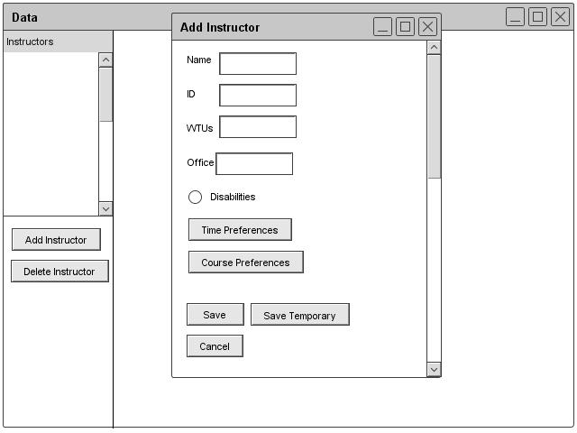
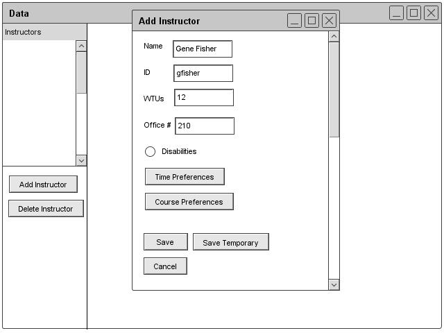
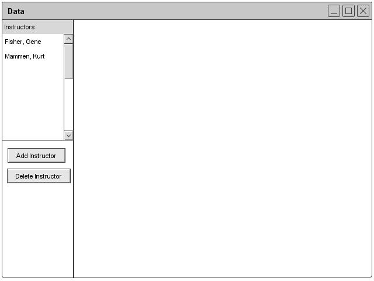
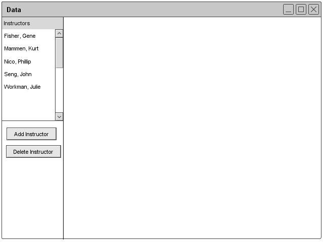
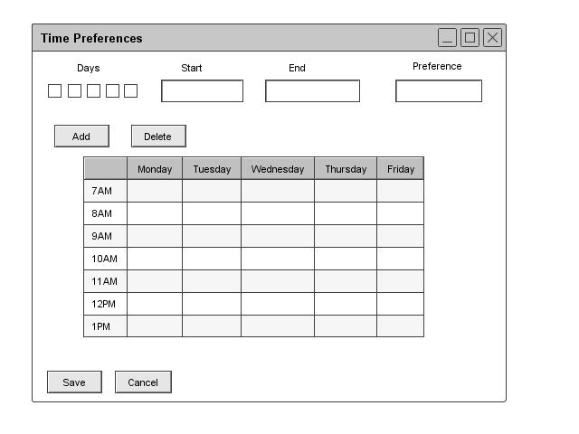
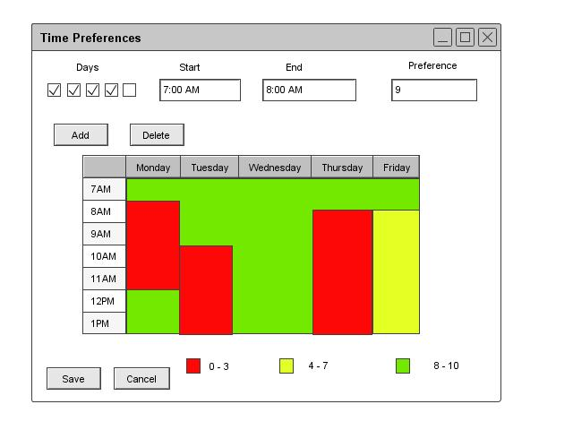
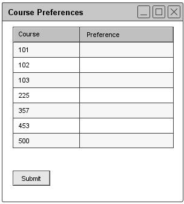
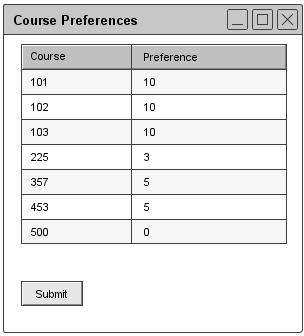

2.3.1.1: Adding Instructor information
If the user is an instructor or administrator then the user can add instructor information. Figure 10 shows the add instructor information form. If the instructor is already in the database, the Scheduler shows a prompt telling the user that the instructor's information is already in the database. After clicking the button on the prompt, the tool displays the edit page. If the instructor is not in the database, then the tool displays an empty form as shown in Figure 10. The form for adding an instructor contains fields for name, ID, WTUs (Work Time Units), department office number, and disabilities. The form also has buttons for time and course preferences.

Figure 10: Adding Instructor Dialogue
Figure 11 illustrates a filled in dialogue for the add instructor form.

Figure 11: Filled Adding Instructor Dialogue
Figures 12 and 13 illustrate what the database looks like with multiple instructors added and two instructors added.

Figure 12: Instructor Database

Figure 13: Instructor Database Filled
The instructor edits the time preferences by clicking the Time Preference. The Scheduler displays a form with a calendar view. The instructor uses the fields at the top of the form to input time preferences. Once done editing the calendar view will update and give the instructor a view of the preferences. Figure 14 illustrates the time preferences dialogue. Once done, the instructor clicks Save.

Figure 14: Editing Time Preferences Dialogue
Figure 15 displays a filled in dialogue for the time preferences form. The 0-10 scale represents how much a professor would like to teach at the corresponding time. The 0 means that an instructor is unavailable and a 10 means the instructor would ideally like to teach at the time.

Figure 15: Filled Editing Time Preferences Dialogue
If the instructor wishes to edit course preferences, then the instructor clicks on Course Preferences. Afterwards the program shows the instructor a form with two columns, one for the course number and the other for how much the professor would like to teach that course during the quarter.The range for the second number is 0 to 10 with 0 meaning the instructor cannot teach a course at that time and 10 meaning the instructor would highly prefer to teach a course. The professor fills in the information and then click submit. Figure 16 illustrates the course preference form.

Figure 16: Editing Course Preferences Dialogue
Figure 17 illustrates a filled in dialogue for the course preference form.

Figure 17: Filled Editing Course Preferences Dialogue
If the user is not an instructor, then the information for adding an instructor greys out.
Once completed with the form, the instructor or administrator can click Save to save changes. If the added instructor will only be teaching for a single quarter, then the instructor will click on the Save Temporary. The temporary instructor will not be saved to the permanent database and will only appear in the copy of the database found in the individual schedule.
prev: data-instructor |
next: instructor-edit |
up: data-instructor |
index: index